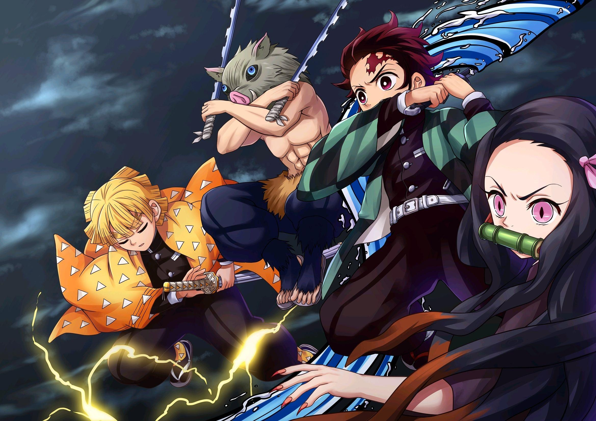
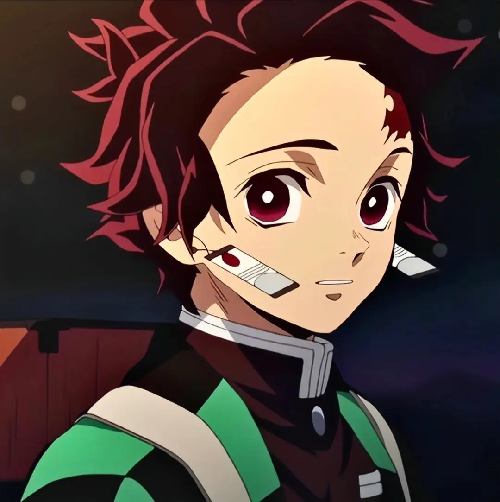
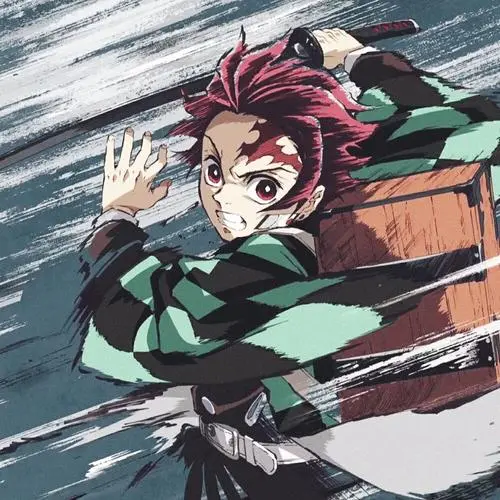

《鬼灭之刃》是由日本漫画家吾峠呼世晴创作的少年漫画。
自2016年2月15日—2020年5月11日在集英社《周刊少年Jump》上连载。已完结。作品亦被改编成同名电视动画片，动画由ufotable负责动画制作，于2019年4月6日起首播。截至2021年2月15日，包含电子版在内的本作系列累计发行量已突破1.5亿册。该动画片可在bilibili上观看。


幸福的日常生活，在家人遭到恶鬼袭击的那一天发生了剧变。母亲与四个弟弟妹妹惨遭杀害，而与他一起生还的妹妹祢豆子亦异变成凶暴的鬼。在猎鬼人的指引下，立志成为猎鬼人的炭治郎与变成鬼却尚存理智的祢豆子踏上了旅程。通过艰苦的剑术修行与赌命试炼，炭治郎成为了猎鬼人组织“鬼杀队”的一员。为了让妹妹祢豆子变回人类，为了讨伐杀害家人的恶鬼，为了斩断悲伤的连锁，少年与鬼的战斗不曾停歇。幸福被破坏之时，总是弥漫着鲜血的味道。纵然我身俱灭，定将恶鬼斩杀！血风剑戟冒险谭，开幕！